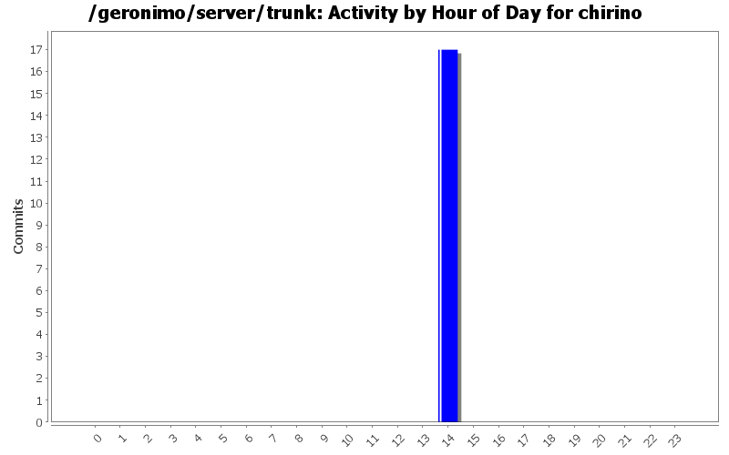
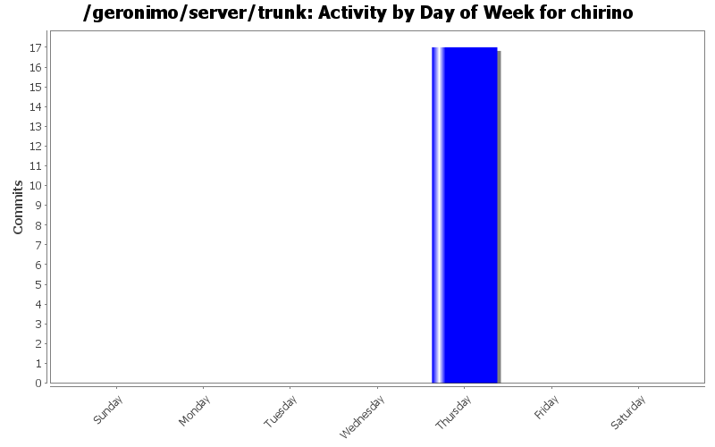
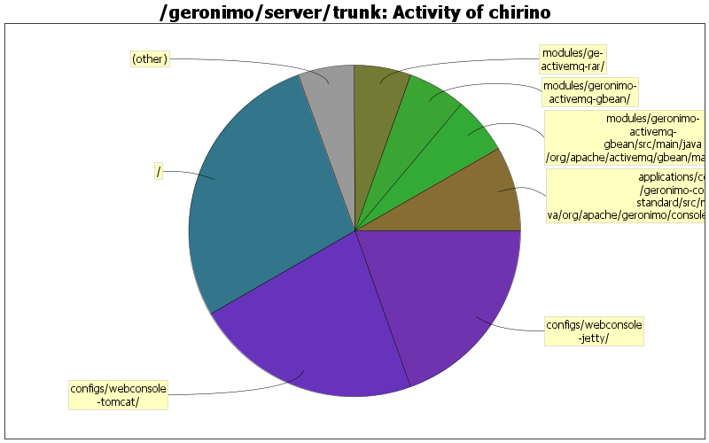

| Directory | Changes | Lines of Code | Lines per Change |
|---|---|---|---|
| Totals | 17 (100.0%) | 36 (100.0%) | 2.1 |
| / | 1 (5.9%) | 10 (27.8%) | 10.0 |
| configs/webconsole-tomcat/ | 1 (5.9%) | 8 (22.2%) | 8.0 |
| configs/webconsole-jetty/ | 1 (5.9%) | 7 (19.4%) | 7.0 |
| applications/console/geronimo-console-standard/src/main/java/org/apache/geronimo/console/jmsmanager/renderers/ | 1 (5.9%) | 3 (8.3%) | 3.0 |
| modules/geronimo-activemq-gbean/src/main/java/org/apache/activemq/gbean/management/ | 1 (5.9%) | 2 (5.6%) | 2.0 |
| modules/geronimo-activemq-gbean/ | 1 (5.9%) | 2 (5.6%) | 2.0 |
| modules/ge-activemq-rar/ | 1 (5.9%) | 2 (5.6%) | 2.0 |
| modules/geronimo-activemq-gbean/src/main/java/org/apache/activemq/gbean/ | 1 (5.9%) | 1 (2.8%) | 1.0 |
| applications/console/geronimo-console-standard/ | 1 (5.9%) | 1 (2.8%) | 1.0 |
| modules/ge-activemq-rar/src/main/rar/META-INF/ | 2 (11.8%) | 0 (0.0%) | 0.0 |
| configs/activemq/src/plan/ | 2 (11.8%) | 0 (0.0%) | 0.0 |
| configs/activemq-broker/src/plan/ | 2 (11.8%) | 0 (0.0%) | 0.0 |
| configs/activemq-broker/ | 2 (11.8%) | 0 (0.0%) | 0.0 |

Applying patch GERONIMO-2364
36 lines of code changed in 17 files: